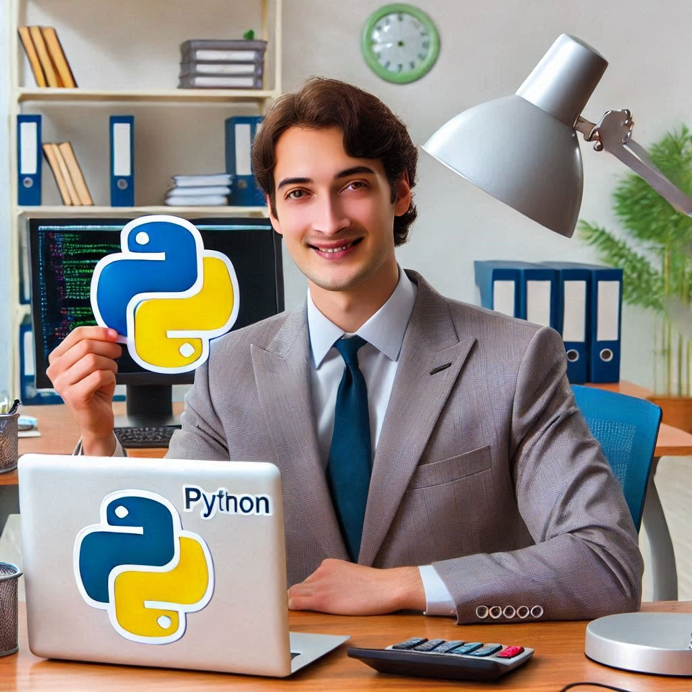

Python Beginners Course
Python is a high-level, interpreted, and general-purpose programming language known for its simplicity, readability, and versatility. It was created by Guido van Rossum and first released in 1991. Python is widely used for various applications, including web development, data analysis, machine learning, automation, scientific computing, and more. Its extensive standard library and large community have contributed to its popularity across diverse industries.
Instructor

Uttam Kumar
Python & Artificial Intelligence Expert
Course Overview
Python is a versatile and high-level programming language that emphasizes simplicity and readability, making it an excellent choice for both beginners and experienced developers. Created by Guido van Rossum in 1991, Python has grown to become one of the most popular languages globally, supported by a vast community of users and contributors. Its intuitive syntax, inspired by natural language, allows developers to write clean and concise code, which improves productivity and reduces the learning curve for newcomers.
One of Python's greatest strengths is its extensive standard library and support for third-party modules. This allows developers to accomplish tasks ranging from file handling, networking, and database interactions to web development and scientific computing without reinventing the wheel. Popular libraries like NumPy and pandas are indispensable in data analysis, while frameworks such as Django and Flask power robust web applications. Python’s versatility also extends to emerging technologies like artificial intelligence and machine learning, with TensorFlow and PyTorch leading the charge.
Python supports multiple programming paradigms, including procedural, object-oriented, and functional programming. Its dynamic typing and interpreted nature simplify the development process by eliminating the need for explicit type declarations and enabling rapid prototyping. Moreover, Python’s platform independence ensures that code written on one operating system can be easily run on others with minimal changes, making it a preferred choice for cross-platform applications.
The language has become a cornerstone for data science and automation due to its ability to process, analyze, and visualize data with ease. Python’s scripting capabilities allow developers to automate repetitive tasks, making it an invaluable tool for system administrators and DevOps professionals. From scraping data off the web using BeautifulSoup to automating workflows with Selenium, Python is a go-to tool for enhancing productivity across various domains.
In conclusion, Python's simplicity, vast ecosystem, and flexibility have cemented its position as a dominant force in the programming world. Whether you're building a web application, analyzing large datasets, or developing AI-driven solutions, Python provides the tools and community support needed to succeed. Its continued evolution and widespread adoption across industries indicate that Python will remain a crucial part of the tech landscape for years to come.
What you'll learn
Python Basics: Understanding syntax, variables, and data types.
Control Structures: Mastering loops, conditionals, and functions.
Data Structures: Working with lists, dictionaries, sets, and tuples.
Object-Oriented Programming: Learning classes, objects, inheritance, and encapsulation.
Modules and Libraries: Using Python's standard library and third-party modules.
File Handling: Reading and writing files for data storage.
Error Handling: Managing exceptions to prevent program crashes.
Data Science Tools: Analyzing data with NumPy, pandas, and visualizing with Matplotlib.
Web Development: Building websites with Flask or Django.
Automation: Writing scripts for web scraping and task automation.
This course includes:
120 hours video
289 articles
Downloadable resources
Full lifetime resources
Access on Mobile
Assignments
Valuable Projects
Certificate of completion
Stipend